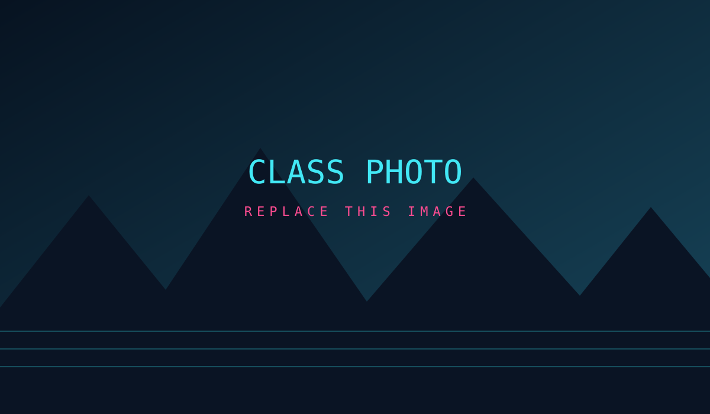
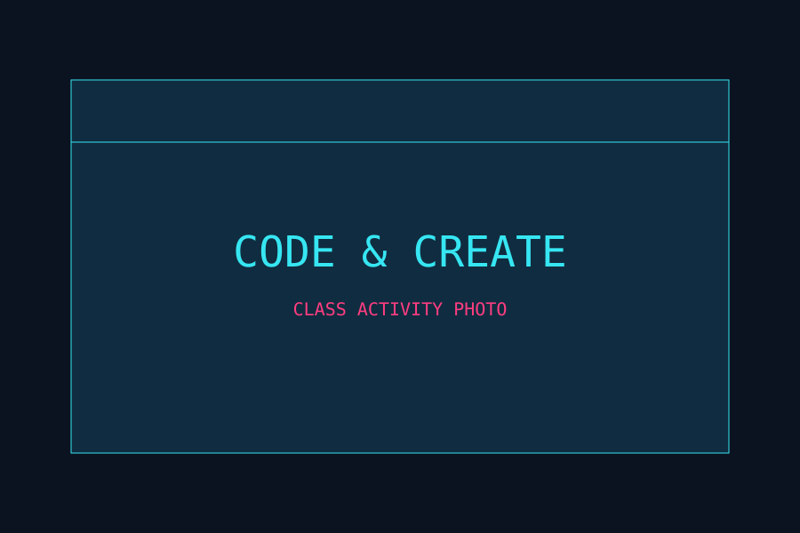

ARCHIVE 001
THE CLASS PORTRAIT
Ganti gambar ini dengan foto bersama kelas.
VISUAL ARCHIVE / 003
Tempat untuk mengumpulkan momen, kegiatan, dan perjalanan XI RPL 1.
PHOTO DATABASE

Ganti gambar ini dengan foto bersama kelas.

Dokumentasi kegiatan belajar.
Kenangan kegiatan sekolah.
TIPS: simpan foto baru di folder foto, lalu ubah atribut src pada file galeri.html.